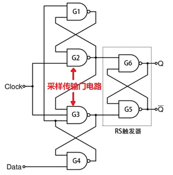
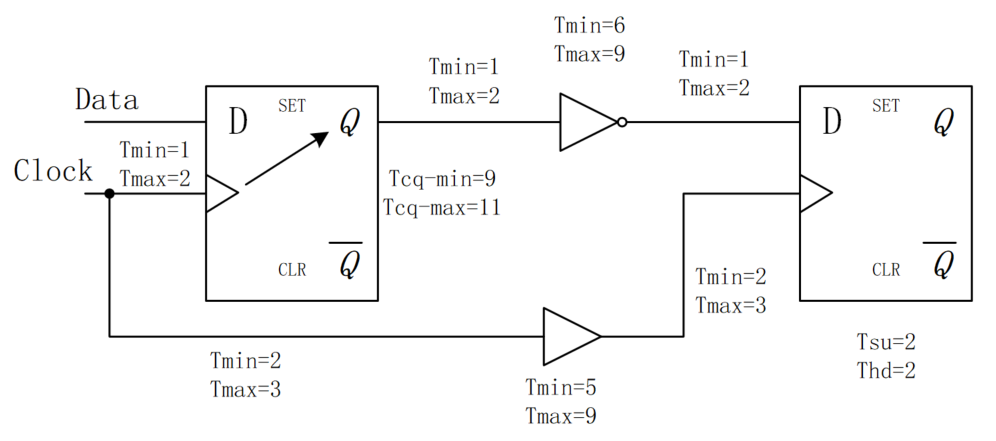
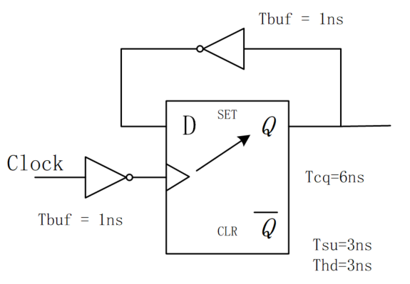

キーワード：セットアップ時間、ホールド時間
デジタルシステムにとって、セットアップ時間（setup time）とホールド時間（hold time）はデジタル回路のタイミングの基礎です。デジタル回路システムの安定性は、基本的にタイミングがセットアップ時間とホールド時間を満たしているかどうかに依存します。そのため、ここでは丸ごと一節を使って、セットアップ時間とホールド時間の概念について詳しく説明します。
基本概念
セットアップ時間とは、クロックトリガイベントが到来する前に、データが安定して保持される必要がある最小時間であり、データがクロックによって正しくサンプリングされるようにするためのものです。
ホールド時間とは、クロックトリガイベントが到来した後、データが安定して保持される必要がある最小時間であり、データが回路によって正確に伝送されるようにするためのものです。
通俗的には次のように理解できます。クロックが到来する前に、データは事前に準備しておく必要があります。クロックが到来した後も、データはしばらく安定している必要があります。セットアップ時間とホールド時間は、データが安定するウィンドウを構成します。下図のとおりです。

『1.3 ゲート遅延』で、簡単なDフリップフロップを紹介しました。次に、典型的な立ち上がりエッジDフリップフロップを見て、セットアップ時間とホールド時間の由来を説明します。

G1~G4のNANDゲートは維持ブロック回路であり、G5~G6はRSフリップフロップを構成します。
クロックはG2/G3ゲートに直接作用します。クロックがLowのときG2/G3の経路は閉じ、Highのとき経路が開いてデータのサンプリング伝送を行います。
しかし、データがG2/G3ゲートに伝送される前に、G4/G1 NANDゲートを経由するため、時間遅延が生じます。セットアップ時間の概念を導入するのは、G4/G1ゲートでのデータ遅延を補償するためです。すなわち、クロックが到来する前に、G2/G3側の入力データが準備できている必要があり、データが正しくサンプリングされるようにします。
データがクロックによってサンプリングされた後、RSフリップフロップに伝送されてラッチされる前に、G2/G3ゲートも経由するため、遅延が生じます。ホールド時間は、G2/G3ゲートでのデータ遅延を補償するためのものです。すなわち、クロックが到来した後、データがG6/G5 NANDゲートの入力端に正しく伝送されることを保証する必要があります。
データが伝送中にセットアップ時間またはホールド時間を満たさない場合、メタステーブル状態になり、伝送エラーが発生します。
制約条件
セットアップ時間の制約条件
下図は、典型的なフリップフロップ間のデータ伝送の概略図です。ここで "Comb" は組み合わせ論理遅延を表し、"Clock Skew" はクロックスキューを表し、データはすべてクロックの立ち上がりエッジでトリガされます。

クロックが到来する前に、データは事前に準備できている必要があり、クロックによって正しくサンプリングされるためには、データパス（data path）がクロックパス（clock path）よりも速いこと、すなわちデータ到達時間（data arrival time）がデータ要求時間（data required time）より小さいことが要求されます。このときセットアップ時間が満たすべき式は次のとおりです。
Tcq + Tcomb + Tsu <= Tclk + Tskew （1）
各時間パラメータの説明は次のとおりです。
- Tcq：レジスタのclock端子からQ端子までの遅延；
- Tcomb：data path内の組み合わせ論理遅延；
- Tsu：セットアップ時間；
- Tclk：クロック周期；
- Tskew：クロックスキュー。
上式を変形すると、理論上回路が対応できる最小クロック周期と最大クロック周波数はそれぞれ次のようになります。
最小时钟周期 = Tcq + Tcomb + Tsu - Tskew 最快时钟频率 = 1 / (Tcq + Tcomb + Tsu - Tskew)
ホールド時間の制約条件
クロックが到来した後、データはさらにしばらく安定している必要があります。そのため、前段のデータ遅延（data delay time）がフリップフロップのホールド時間より大きくならないことが要求され、データが流されてしまうのを防ぎます。このときホールド時間が満たすべき式は次のとおりです。
Tcq + Tcomb >= Thd + Tskew (2)
各時間パラメータの説明は次のとおりです。
- Tcq：レジスタのclock端子からQ端子までの遅延；
- Tcomb：data path内の組み合わせ論理遅延；
- Thd：ホールド時間；
- Tskew：クロックスキュー。
式(1)(2)から、クロックスキュー、組み合わせ論理遅延、およびクロック周期の制約を導出できます。
ここでは、この2つの最も基本的な制約条件式だけを覚えておくことをお勧めします。他のパラメータの制約を求める必要があるときに導出すれば、さまざまな導出によって記憶が混乱するのを防げます。
セットアップ時間とホールド時間のタイミング図
セットアップ時間とホールド時間に関する複雑なタイミング図を次に示します。
ここで、緑色の部分はセットアップ時間のマージン（margin）を表し、青色の部分はホールド時間のマージンを表します。時間マージンとは、回路がタイミング制約を満たす条件下での、不等式(1)または(2)の両辺の時間差のことです。
建立时间裕量为：（时钟路径时间）-（数据路径时间） 保持时间裕量为：（数据延迟时间） - （保持时间 + 时钟偏移）
この図は、セットアップ時間とホールド時間の制約条件の導出を理解しやすくするためのものです。ここで記憶が混乱するようであれば、深く追求しないことをお勧めします(^_^)。

計算例
セットアップ時間とホールド時間の概念をよりよく理解し、面接や仕事にも役立つよう、ここでは典型的なセットアップ時間とホールド時間の試験問題をいくつか挙げて参考にします。
例1：
ネット遅延を考慮すると、ある回路の各種遅延値（単位：ns）は次のとおりで、クロック周期は15nsです。この回路のセットアップ時間とホールド時間にviolation（違反）があるかどうか判断してください。

解：
ここでは遅延値の最大値と最小値が関係します。
タイミング制約が常に成立することが要求されるため、式(1)(2)は次のように変形されます。
max (data path time) <= min (clock path time) min (data delay time) >= max (Thd + Tskew)
セットアップ時間のチェック：
max (data path time) = 2 + 11 + 2 + 9 + 2 + 2 = 28ns min (clock path time) = 15 + 2 + 5 + 2 = 24ns
したがって、セットアップ時間にviolation（違反）があります。
ホールド時間のチェック：
min (data delay time) = 1 + 9 + 1 + 6 + 1 = 18ns max (Thd + Tskew) = 3 + 3 + 9 + 2 = 17ns
したがって、ホールド時間にviolation（違反）はなく、マージン（margin）は1nsです。
この例では、セットアップ時間とホールド時間の式を機械的に当てはめることはできず、データパス、タイミングパス、データ遅延などの概念から制約条件を構築する必要があります。したがって、さまざまなタイミング制約条件は実際の回路に基づいて分析する必要があります。
例2：
ある有名企業の面接問題です。クロック周期はT、第1段フリップフロップD1のセットアップ時間の最大値はT1max、最小値はT1minです。組み合わせ論理の最大遅延はT2max、最小値はT2minです。問い：第2段フリップフロップD2のセットアップ時間とホールド時間はどのような条件を満たすべきでしょうか。
解：
第2段のセットアップ時間とホールド時間は、第1段のフリップフロップとは直接関係がないため、ここでのT1maxとT1minは引っかけ項目です。
例題ではクロックからQ端子までの遅延とクロックスキューも与えられていないため、ここでは考慮する必要もありません。
例1の指示と合わせると、D2のセットアップ時間Tsuとホールド時間Thdは次を満たす必要があります。
T2max + Tsu <= T T2min >= Thold
即
Tsu <= T - T2max Thold <= T2min
この例では多くの遅延タイプが考慮されていません。タイミング制約条件を構築する際には、既知の条件に基づいて取捨選択を理解する必要もあります。
例3：
簡単な分周回路を次に示します。このフリップフロップのセットアップ時間は3ns、ホールド時間は3ns、論理遅延は6ns、2つのインバータの遅延は1ns、配線遅延は0です。この回路の最高動作周波数はいくらでしょうか。

解：
ここでの論理遅延はクロック端子からQ端子までの遅延と理解する必要があり、回路内の組み合わせ論理遅延ではないことに注意してください。
フリップフロップのQ端子とD端子が接続されているため、2つのフリップフロップが直接伝送すると理解できます。したがって、data pathには組み合わせ論理遅延はなく、インバータの遅延が1つだけあります。
クロックが1つしかないため、クロックスキューもなく、clock pathのインバータ遅延も引っかけ項目です。
したがって、タイミング制約条件は次のとおりです。
Tcq + Tbuf + Tsu <= Tclk
この回路の最高動作周波数は次のように求められます。
1 / (6ns + 1ns + 3ns) = 100Mhz。
この例はフリップフロップ自身から自身へのフィードバックです。データパスとクロックパスをしっかり分析する必要があります。次に、このタイプの拡張例題をもう1つ見てみましょう。
例4：
- （1）次の回路の固有のセットアップ時間とホールド時間は？
- （2）この回路の最高動作周波数は？

解：
この回路はデータパスとクロックパスの両方に遅延があります。フリップフロップと同じセットアップ時間とホールド時間の制約条件を達成するために、フリップフロップのD端子とクロック端子CK、および等価なデータ端子Dataとクロック端子Clockのタイミング図は次のとおりです（簡潔に描くためにかなり努力しました~_~）：

(1) 図からわかるように：
この回路の固有のセットアップ時間は次のとおりです。2.1 + 2 - 1.2 = 2.9ns
固有のホールド時間は次のとおりです。1.2 + 1.5 - 2.1 = 0.6ns
このことから、データパスの遅延は回路の固有のセットアップ時間を増加させますが、回路の固有のホールド時間は減少させることがわかります。一方、クロックスキューは回路の固有のセットアップ時間を減少させ、固有のホールド時間を増加させます。
こっそり教えますと、回路の固有のセットアップ時間とホールド時間を求めることは、実は時間マージンを求めるプロセスです。
(2) この回路も依然として自身から自身へのフィードバック回路です。したがって、クロックスキューはなく、T1=0.9nsの遅延も考慮する必要はありません。したがって、最高動作周波数は次のとおりです。 1 / (1.8 + 1.2 + 2)ns = 200MHz
クリックしてノートを共有
<p style="font-size:14px;">ノートは本記事の内容の拡張である必要があります！</p><br> <p style="font-size:12px;"><a href="../tougao.html" target="_blank">記事の投稿は、こちらをクリック</a></p> <p style="font-size:14px;"><a href="./runoob-user-test-intro.html" target="_blank">登録招待コードの取得方法</a></p> <h3 class="text-muted"><i class="fa fa-info-circle" aria-hidden="true"></i> ノートを共有する前に<a href=".." class="runoob-pop">ログイン</a>が必要です！</h3> <p><a href="./runoob-user-test-intro.html" target="_blank">登録招待コードの取得方法</a></p>